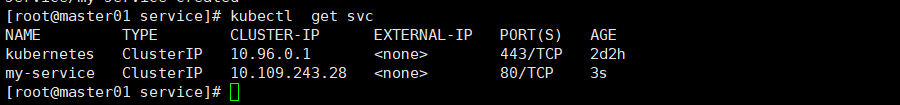
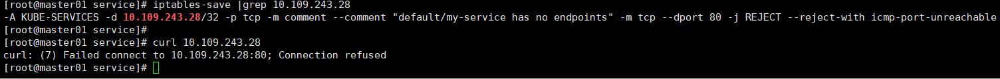
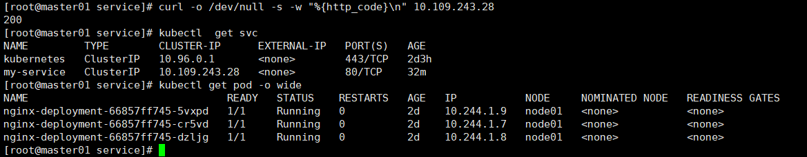
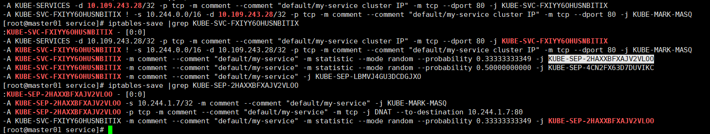
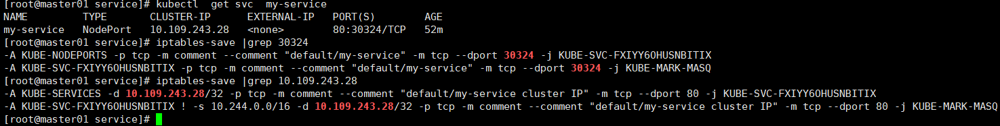

Service
Service基本概念
在Kubernetes (k8s) 中，Service是一个抽象概念，它定义了一种访问和暴露一组运行在Pods中的应用的方法。Service使得外部访问Pods变得容易，并且为内部集群通信提供了一种稳定的方式，因为Pods可能会被杀死和动态创建。
Service有几种类型，每种类型提供不同的网络特性：
- ClusterIP：这是默认的Service类型，它为Service在集群内部提供一个内部的IP地址，这样集群中的其他组件就可以访问它。这个IP地址是集群内部的，外部网络无法访问它。
- NodePort：这种类型的Service在ClusterIP的基础上，为Service在每个节点的IP上提供一个静态端口（NodePort）。这样，Service可以通过
<NodeIP>:<NodePort>的方式从集群外部访问。NodePort通常在30000-32767之间的范围内分配。 - LoadBalancer：这种Service类型在NodePort的基础上，还会请求云提供商的负载均衡器。这个负载均衡器会将外部的流量分发到集群中的Pods。这是让Service能够从互联网上可达的常用方式。
- ExternalName：这种类型的Service没有选择器和端口定义，它允许通过Kubernetes服务定义来返回一个固定的CNAME记录，通常用于服务发现。
Service通过选择器（Selector）与Pods建立连接，选择器定义了Service要管理的Pods的标签。当一个Service被定义后，它会自动创建一个端点（Endpoints）对象来表示后端的Pods IP地址。
例如，假设你有一组标记为app=myapp的Pods，你可以创建一个Service来选择这些Pods，并为它们提供一个单一的访问点。
apiVersion: v1
kind: Service
metadata:
name: my-service
spec:
selector:
app: myapp
ports:
- protocol: TCP
port: 80
targetPort: 9376
在这个例子中，Service将监听端口80，并将流量转发到标记为app=myapp的Pods的9376端口。
Service的存在确保即使后端Pods发生变化，前端客户端也无需知道这些变化，可以继续通过Service访问应用。这对于实现无缝的扩展和动态管理很重要。

但是由于这个规则并没有对于的后端（也就是没对于的pod和对应），这个地址也是无法访问的（从iptabels上看也可以看到，他并没有往后走）。

范例
以下是一个Kubernetes部署（Deployment）和服务（Service）的YAML配置示例，这两者通过匹配的标签（labels）和选择器（selector）连接在一起。
首先是Deployment的配置：
apiVersion: apps/v1
kind: Deployment
metadata:
name: my-app-deployment
labels:
app: myapp
spec:
replicas: 3
selector:
matchLabels:
app: myapp
template:
metadata:
labels:
app: myapp
spec:
containers:
- name: myapp-container
image: myapp:1.0.0
ports:
- containerPort: 80
在这个Deployment中，我们有：
- 一个名叫
my-app-deployment的Deployment。 app: myapp标签，用来标识属于这个Deployment的资源。- 三个Pod的副本数（replicas）。
- 一个选择器（selector）用来匹配标签
app: myapp，确保Deployment管理带有此标签的Pods。 - 一个Pod模板（template）指定了Pods的配置，包括使用
myapp:1.0.0镜像的容器，该容器监听端口80。
接下来是与之匹配的Service的配置：
apiVersion: v1
kind: Service
metadata:
name: my-app-service
spec:
selector:
app: myapp
ports:
- protocol: TCP
port: 80
targetPort: 80
type: ClusterIP
在这个Service配置中，我们有：
- 一个名叫
my-app-service的Service。 - 一个选择器（selector），它与Deployment中Pods的标签
app: myapp匹配，表示Service要管理的Pods。 - 一个端口配置，指示Service在TCP协议下监听端口80，并将流量转发到Pods的端口80（targetPort）。
type: ClusterIP表示这是一个仅在集群内部可访问的Service。
这样配置好之后，任何时候只要有满足app: myapp标签的Pods运行，my-app-service就会将流量路由到这些Pods上，无论这些Pods在何时何地启动。
流量如何到Pod
这里直接访问service就已经正常返回200，可是具体怎么走的，怎么来实现的负载均衡呢？

我们可以通过iptables来解释

1.命中服务
-A KUBE-SERVICES -d 10.109.243.28/32 -p tcp -m comment --comment "default/my-service cluster IP" -m tcp --dport 80 -j KUBE-SVC-FXIYY6OHUSNBITIX
-A KUBE-SVC-FXIYY6OHUSNBITIX ! -s 10.244.0.0/16 -d 10.109.243.28/32 -p tcp -m comment --comment "default/my-service cluster IP" -m tcp --dport 80 -j KUBE-MARK-MASQ
这两行是 Kubernetes 在 iptables 中为服务设置的规则，它们用于处理到达服务的集群IP的网络流量。这些规则是由 kube-proxy 组件根据服务定义自动生成的。让我们逐个解释这些规则：
第一条规则：
-A KUBE-SERVICES -d 10.109.243.28/32 -p tcp -m comment --comment "default/my-service cluster IP" -m tcp --dport 80 -j KUBE-SVC-FXIYY6OHUSNBITIX
-A KUBE-SERVICES: 这表示将规则附加（Append）到KUBE-SERVICES链。-d 10.109.243.28/32: 指定目的 IP 地址为 10.109.243.28，/32表示只有这个特定的 IP 地址适用于此规则。-p tcp: 指明这个规则仅适用于 TCP 协议。-m comment --comment "default/my-service cluster IP": 为规则添加注释，注释内容是 "default/my-service cluster IP"，通常用于说明规则的用途，这里表示这是针对命名空间为default下名为my-service的服务的集群 IP 地址。-m tcp --dport 80: 使用 tcp 模块匹配目的端口号为 80 的流量。-j KUBE-SVC-FXIYY6OHUSNBITIX: 如果匹配，跳转到另一个名为KUBE-SVC-FXIYY6OHUSNBITIX的链，这通常是服务专用的链，其中包含了后端 Pod 的负载均衡规则。
第二条规则：
-A KUBE-SVC-FXIYY6OHUSNBITIX ! -s 10.244.0.0/16 -d 10.109.243.28/32 -p tcp -m comment --comment "default/my-service cluster IP" -m tcp --dport 80 -j KUBE-MARK-MASQ
-A KUBE-SVC-FXIYY6OHUSNBITIX: 附加规则到KUBE-SVC-FXIYY6OHUSNBITIX链。! -s 10.244.0.0/16: 表示源 IP 地址不在 10.244.0.0/16 这个子网内的流量。Kubernetes 通常使用这样的子网作为 Pod 的网络。这条规则是用来标记那些不是从集群内部来的流量，因为 Pod 间通信通常不需要进行网络地址转换（NAT）。-d 10.109.243.28/32: 同上，目的 IP 地址是服务的集群 IP。-p tcp: 同上，指定 TCP 协议。-m comment: 同上，提供规则的注释。-m tcp --dport 80: 同上，匹配目的端口 80。-j KUBE-MARK-MASQ: 如果匹配，则跳转到KUBE-MARK-MASQ链，这个链会标记流量，使得在离开节点时进行 IP 伪装（即 MASQUERADE，一种源 NAT），确保响应可以返回到原始的请求者。这是必要的，因为原始请求者可能不知道集群内部的 Pod IP。
简而言之，这些规则是 Kubernetes 服务网络功能的一部分，确保集群内部和外部的流量都可以正确地路由到服务后端的 Pod。
通俗的来说，就是当集群内部访问 10.109.243.28:80的时候，会继续验证规则走向链KUBE-SVC-FXIYY6OHUSNBITIX
2.命中算法规则
-A KUBE-SERVICES -d 10.109.243.28/32 -p tcp -m comment --comment "default/my-service cluster IP" -m tcp --dport 80 -j KUBE-SVC-FXIYY6OHUSNBITIX
-A KUBE-SVC-FXIYY6OHUSNBITIX ! -s 10.244.0.0/16 -d 10.109.243.28/32 -p tcp -m comment --comment "default/my-service cluster IP" -m tcp --dport 80 -j KUBE-MARK-MASQ
-A KUBE-SVC-FXIYY6OHUSNBITIX -m comment --comment "default/my-service" -m statistic --mode random --probability 0.33333333349 -j KUBE-SEP-2HAXXBFXAJV2VLOO
-A KUBE-SVC-FXIYY6OHUSNBITIX -m comment --comment "default/my-service" -m statistic --mode random --probability 0.50000000000 -j KUBE-SEP-4CN2FX63D7DUVIKC
-A KUBE-SVC-FXIYY6OHUSNBITIX -m comment --comment "default/my-service" -j KUBE-SEP-LBMVJ4GU3DCDGJXO
这些规则是 Kubernetes iptables 规则的一部分，用来处理到达某个服务的集群 IP 地址的网络流量。具体来说，这些规则是针对 Kubernetes Service 的，它们确保流量被正确地路由到后端的 Pod。下面我们分别解释每一条规则：
第一条规则：
-A KUBE-SERVICES -d 10.109.243.28/32 -p tcp -m comment --comment "default/my-service cluster IP" -m tcp --dport 80 -j KUBE-SVC-FXIYY6OHUSNBITIX
-A KUBE-SERVICES：将规则添加到KUBE-SERVICES链。-d 10.109.243.28/32：指定目的 IP 地址为服务的集群 IP。-p tcp：指定 TCP 协议。-m comment --comment "default/my-service cluster IP"：添加备注，说明这条规则是针对命名空间default中的my-service服务的集群 IP。-m tcp --dport 80：匹配目的端口为 80 的 TCP 流量。-j KUBE-SVC-FXIYY6OHUSNBITIX：将匹配的流量跳转到KUBE-SVC-FXIYY6OHUSNBITIX链，这通常是一个为该服务专门设置的链。
第二条规则：
-A KUBE-SVC-FXIYY6OHUSNBITIX ! -s 10.244.0.0/16 -d 10.109.243.28/32 -p tcp -m comment --comment "default/my-service cluster IP" -m tcp --dport 80 -j KUBE-MARK-MASQ
-A KUBE-SVC-FXIYY6OHUSNBITIX：将规则添加到KUBE-SVC-FXIYY6OHUSNBITIX链。! -s 10.244.0.0/16：匹配不是来自10.244.0.0/16子网的来源 IP 地址的流量。这个 CIDR 通常是 Pod 网络的地址范围。-j KUBE-MARK-MASQ：对匹配的流量执行MASQUERADE操作，这是为了确保来自 Pod 外部的回复可以返回给正确的客户端。
后续三条规则：
接下来的三条规则是服务的负载均衡规则，用于将流量分发到后端的 Pod。这三条规则按顺序检查，每条规则有一定的概率跳转到对应的 KUBE-SEP-XXXX 链，这些是端点（endpoint）链，每个链对应一个 Pod。使用概率的方式实现了简单的负载均衡。
-A KUBE-SVC-FXIYY6OHUSNBITIX -m comment --comment "default/my-service" -m statistic --mode random --probability 0.33333333349 -j KUBE-SEP-2HAXXBFXAJV2VLOO
- 这条规则有大约 1/3 的概率把流量发送到第一个 Pod。
-A KUBE-SVC-FXIYY6OHUSNBITIX -m comment --comment "default/my-service" -m statistic --mode random --probability 0.50000000000 -j KUBE-SEP-4CN2FX63D7DUVIKC
- 如果第一个规则没有被选中，这条规则有 1/2 的概率把流量发送到第二个 Pod。
-A KUBE-SVC-FXIYY6OHUSNBITIX -m comment --comment "default/my-service" -j KUBE-SEP-LBMVJ4GU3DCDGJXO
- 最后一条规则是一个备用规则，如果前两个 Pod 都没有被选中，流量就会被发送到第三个 Pod。
这样的设置实现了简单的随机负载均衡，确保流量均匀地分配到不同的 Pod。
通俗的来说，就是当集群内部访问 10.109.243.28:80的时候，根据iptables规则安装概率算法平均分配到3个pod上面，当然如果这个规则数量会随着pod的增加减少而自动变化。
3.其中一条具体转发规则
-A KUBE-SEP-2HAXXBFXAJV2VLOO -s 10.244.1.7/32 -m comment --comment "default/my-service" -j KUBE-MARK-MASQ
-A KUBE-SEP-2HAXXBFXAJV2VLOO -p tcp -m comment --comment "default/my-service" -m tcp -j DNAT --to-destination 10.244.1.7:80
这两条 iptables 规则是 Kubernetes iptables 规则的一部分，它们定义了用于处理特定服务端点（Endpoints）的网络流量。在 Kubernetes 中，每个服务后端的 Pod 对应一个称为 Service Endpoint（服务端点）的实体。针对每个服务端点，Kubernetes 创建了一个 iptables 链（如 KUBE-SEP-2HAXXBFXAJV2VLOO），规则用于将流量重定向到对应的 Pod。下面是对这两条规则的解释：
第一条规则：
-A KUBE-SEP-2HAXXBFXAJV2VLOO -s 10.244.1.7/32 -m comment --comment "default/my-service" -j KUBE-MARK-MASQ
-A KUBE-SEP-2HAXXBFXAJV2VLOO：将此规则添加到KUBE-SEP-2HAXXBFXAJV2VLOO链。-s 10.244.1.7/32：匹配源 IP 地址为10.244.1.7的流量。/32表示单个 IP 地址的网络掩码。-m comment --comment "default/my-service"：添加备注，说明此规则是为命名空间default中的my-service服务的某个端点设置的。-j KUBE-MARK-MASQ：对匹配的流量执行MASQUERADE操作，这通常是为了处理源地址转换（SNAT），确保从 Pod 发送出去的流量能够正确地返回。在 Kubernetes 中，这通常用于跨节点的 Pod 通信或者当源地址和目的地址不在同一网络时。
第二条规则：
-A KUBE-SEP-2HAXXBFXAJV2VLOO -p tcp -m comment --comment "default/my-service" -m tcp -j DNAT --to-destination 10.244.1.7:80
-A KUBE-SEP-2HAXXBFXAJV2VLOO：将此规则添加到KUBE-SEP-2HAXXBFXAJV2VLOO链。-p tcp：匹配 TCP 协议的流量。-m comment --comment "default/my-service"：添加备注，说明此规则是为命名空间default中的my-service服务的某个端点设置的。-m tcp：使用 TCP 协议的匹配模块。-j DNAT --to-destination 10.244.1.7:80：对匹配的流量执行目的地址转换（DNAT），将流量的目的地址更改为10.244.1.7，目的端口更改为80。这意味着流量将被重定向到运行在 Pod IP10.244.1.7上的、监听端口80的服务。
简而言之，这些规则将流量重定向到特定的 Pod（在这个例子中是 IP 为 10.244.1.7 的 Pod），并且确保流量可以通过网络地址转换正确地路由。
如果是其他类型的Serivce 也只是在前面加一个规则，比如常用的Nodeport，也只是增加一个iptbles规则，把命中的规则往svc哪个规则走。
